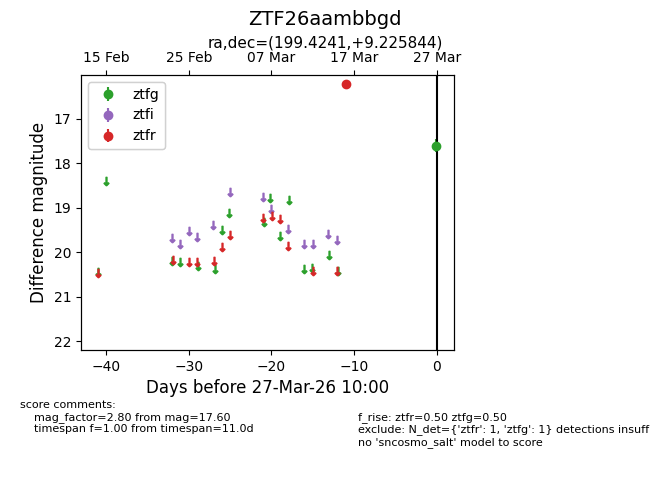
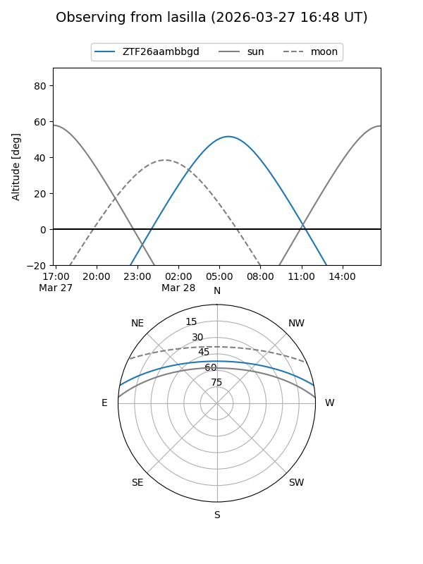
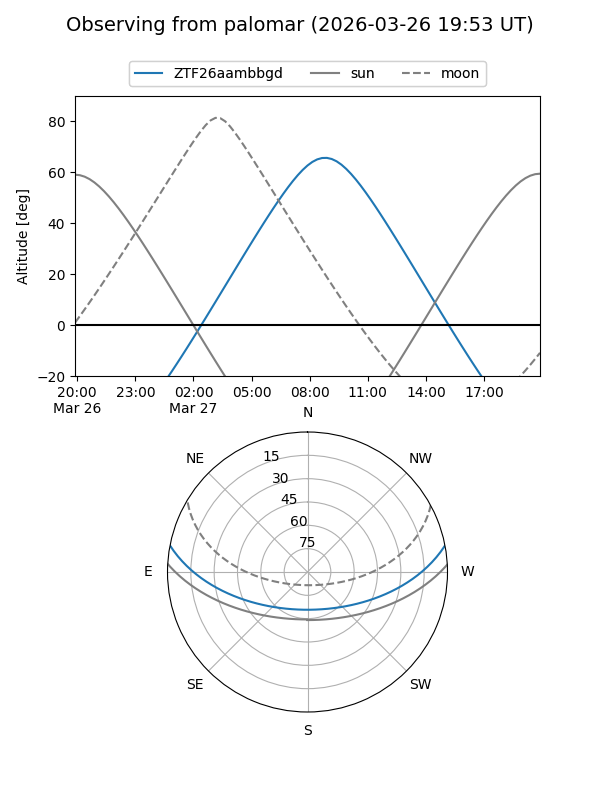

ZTF26aambbgd
Target ZTF26aambbgd at 2026-03-27 10:03
Aliases and brokers:
FINK: link
Lasair: link
ALeRCE: link
alt names
ZTF26aambbgd (ztf,fink_ztf)
Coordinates:
equatorial (ra, dec) = 199.4241,+9.22584
equatorial (HMS+DMS) = 13:17:41.78,+09:13:33.04
galactic (l, b) = (323.2694,+71.05344)
Flags:
Photometry:
last ztfg=17.60, ztfr=16.22
1 ztfg, 1 ztfr detections
Lightcurve

Visibility


Additional plots